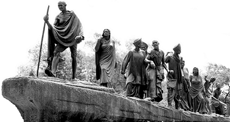

History
Retrospection on the period gone by from 1961 to 2009 is indeed elucidatory of various mile stones laid en route our endeavors. We had our humble beginning in a small outhouse (which was the seat of Travancore Cochin Bar Council) of the then Kerala High Court buildings.
As the number of lawyers swelled and activities increased insufficiency of space felt led us to contemplation of a building of our own. On 29/08/1993 then Chief Minister Sri.K.Karunakaran laid its foundation stone. Thanks to ceaseless efforts by the 5th Bar Council of Kerala and the blue print given by famous Architect Mr.K.G.Sukumaran, a four storied edifice became a reality. This dream tower was dedicated to the lawyer community on 01st February 1997 by none other than the then Honourable Chief Justice of India Mr. Justice A.M. Ahmedi.
As time passed by even the available accommodation in the present building proves inadequate. This is indicative of the various and varied activities of the Council for which more and more space becomes necessary year to year. We have improved the available accommodation by making every inch of the premises user friendly, the ground floor used for office purposes, the 1st floor as auditorium, the 2nd floor as a balcony to the auditorium and the 3rd floor as reference library, conference hall and retiring rooms.
Many epoch making events have been accomplished by us only because of the tiresome but unfailing service by the Bar Council Members and staff. We rose to the expectation of the Government of Kerala by offering to start a new Law School at Ernakulam under our tutelage. The 9th Bar Council of Kerala made it a reality with the help of Government of Kerala by setting up the NIALS; the first Law school in India established by a Bar Council. No sooner it groomed into the NUALS as a University established under Act 27 of 2005 on 13/08/2005 by the Government of Kerala.
At the ceremony of dedicating NUALS to the Nation on 07th January 2006 the then Honourable Judge, Supreme Court of India now Honourable Chief Justice Mr. Justice K.G. Balakrishnan conveyed to the State a New Year gift. Honourable Chief Minister of Kerala Sri Oomen Chandy presided over the function.
It was again Mr. Justice K G Balakrishnan’s devout hands that blessed and heralded the first batch of Law graduates from NUALS at a scintillating Convocation ceremony held at the NUALS campus itself on 03rd November 2007. We proudly recall that the Government of Kerala has allotted to NUALS 10 acres of land at Kalamasseri and the Master Plan for construction of NUALS” own campus set up is on the anvil and would flourish in the near future.
Giant strides were taken by us in the matter of Welfare measures for the Lawyers. We were the forerunner in the matter of establishing the first ever Advocates’ Welfare Fund scheme in India on 05/04/1981 as envisaged under Sections 6(2), 7(2) and 15(2) OF THE Advocates’ Act 1961. As premiers in that field we have kept abreast with growing requirements for the welfare of the brother lawyers by enhancing the original terminal benefit amount of Rs. 30,000/- in 1989 to Rs. One lakh in 1993 and Rs. 3,00,000/- in 2000. On 10/06/2008 we passed the Bill enhancing the yearly benefits from Rs.9375/- to Rs.14, 285/- to a maximum of Rs. 5,00,000/- (Rs. Five lakhs). Accordingly a member of the scheme on termination would get Rs. Three lakhs till the date of amendment and thereafter Rs.14,285/- per year up to a maximum of Rs.Five lakhs.
We can’t but remember with reverence a few of our forerunners in the leadership of this great Council of Lawyers whose glorious and rich contributions carried us to greater heights on their shoulders. First Chairman of the Bar council Mr. Justice K. K. Mathew later on served on the bench of the Kerala High Court and elevated to the Supreme Court of India wherefrom he retired. Our Chairmen Mr. Justices V P Gopalan Nambyar and P Subramaniom Potti became Chief Justices of the High Court of Kerala. Later Chairmen Mr. Justice T S Krishnan Moorthy and Mr. Justice V Bhaskaran Nambyar became Judges of the High Court. Mr. M M Abdul Khader has the creditable record of serving as Chairman of this Council for 10 consecutive years from 17/09/1969 to 08/06/1979. Our former Chairman Dr.V A Syed Mohamed and former member Sri. P C Thomas became Union Ministers.
Past History shines on our future path as beacon light and with a confident mindset we march entering the cyber age embarking on our own Website today.